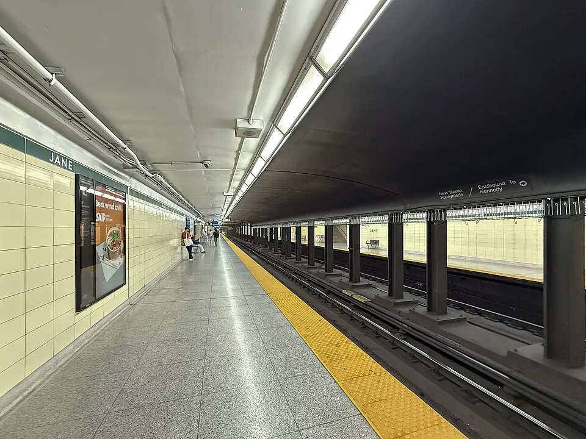

Station atlas / Jane
Station history
Jane


Station history
Subway trains reached Jane, where buses from two different fare zones originally met.
New elevators connected the station levels, making the subway platforms accessible.
 SignalToronto
← Transit dashboard
SignalToronto
← Transit dashboard
Subway trains reached Jane, where buses from two different fare zones originally met.
New elevators connected the station levels, making the subway platforms accessible.